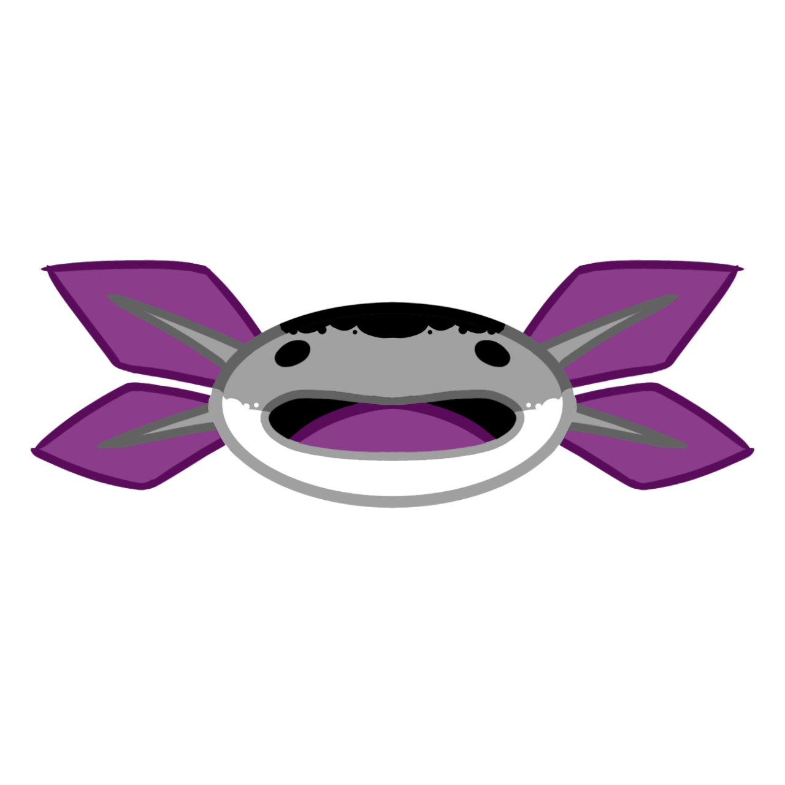
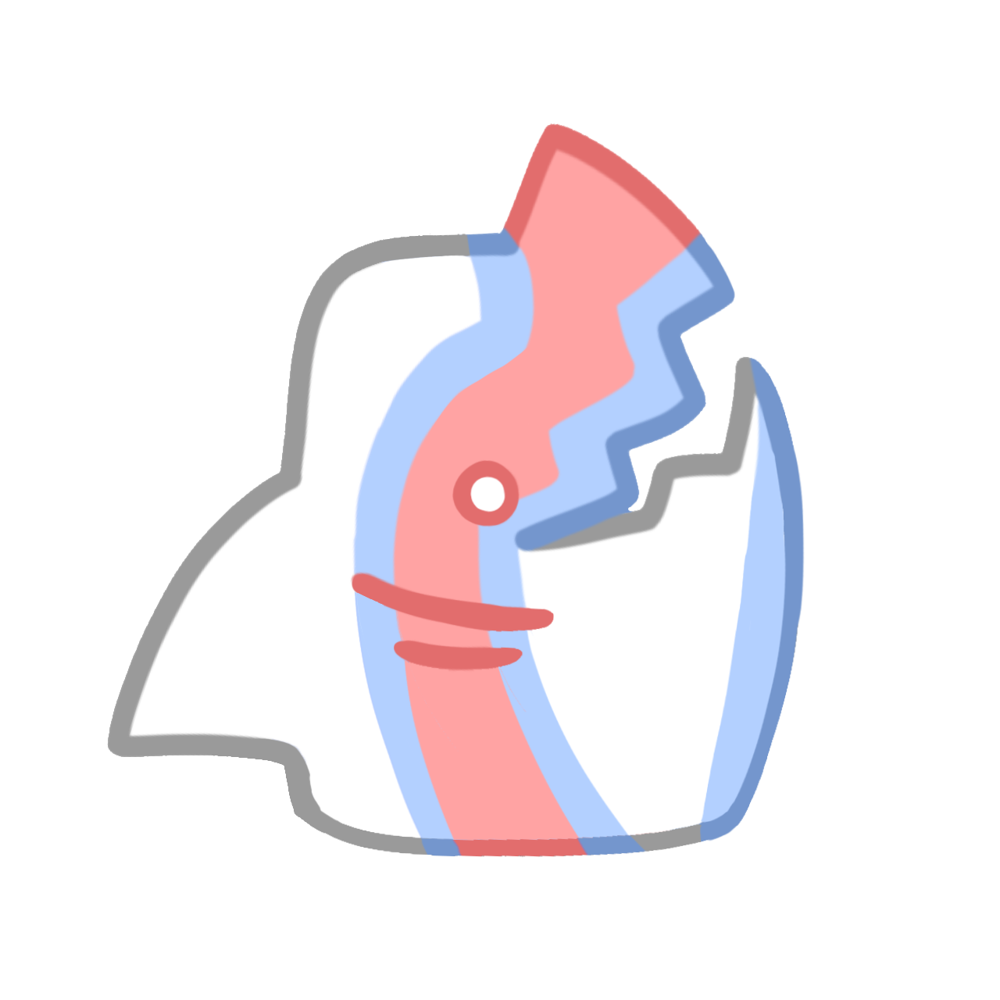

About Us
Welcome to TRANScend Together! Our platform empowers individuals to create their own charities focused on LGBTQ+ advocacy, wildlife conservation, or both. We believe that by bringing together passionate people, we can build a world where nature, diversity, and communities thrive side by side. Our website allows individuals to launch, support, and grow their own charitable initiatives.

What We Do
TRANScend Together provides the tools and resources needed to start and manage impactful charities. Whether you want to protect wildlife, advocate for LGBTQ+ rights, or create a cause that blends both, we offer guidance, fundraising support, and a community of changemakers. Through networking and direct action, we empower individuals and organizations to make a real difference.